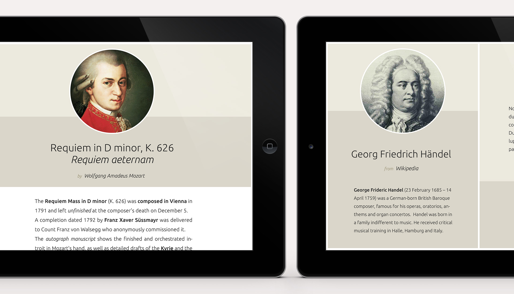
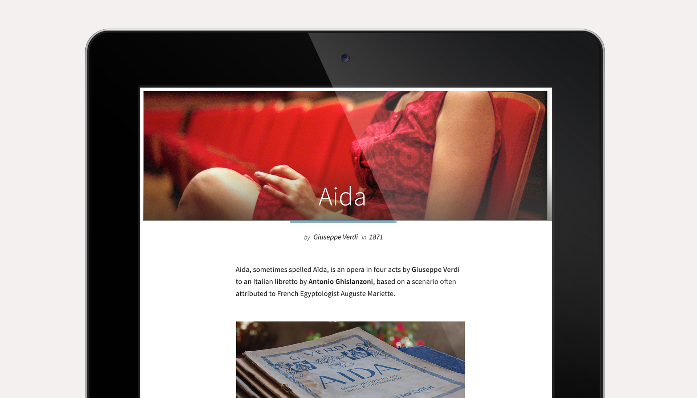
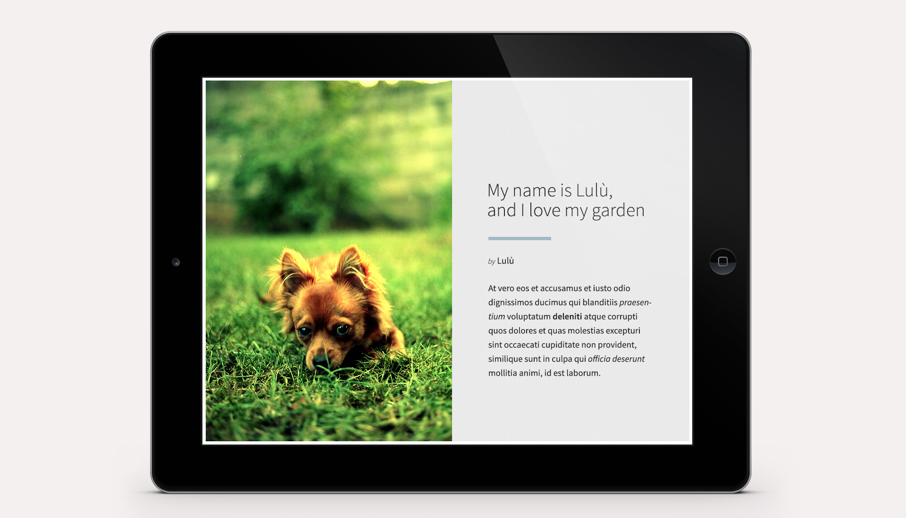
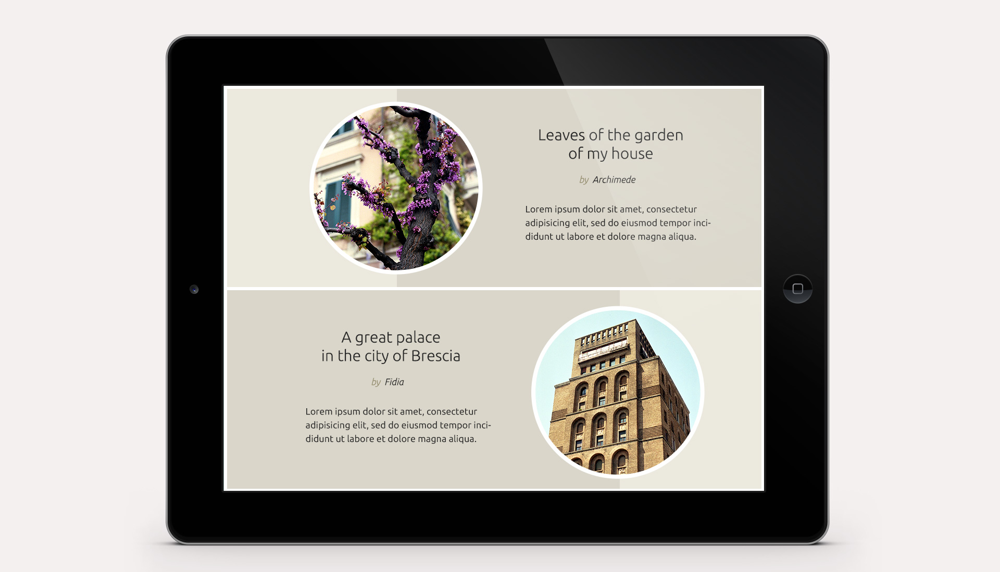
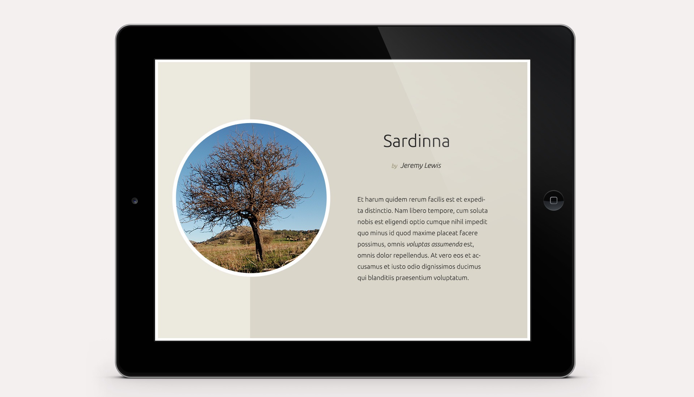

Cape Kode
Set of graphic designs with a focus on typography for digital interactive magazines.
Papermine is a digital magazine generator service that allows you to create interactive pubblications from blogs, RSS feeds and more.
The nice guys at Cape Kode asked me to design some layouts for the service’s themes library. The following mockups are taken from the layout of the themes Life and Oblò.
I am glad I took up the challenge to create some distinctive designs while keeping them faithful to the guidelines required by the multi-device nature of the Papermine resulting publications.
